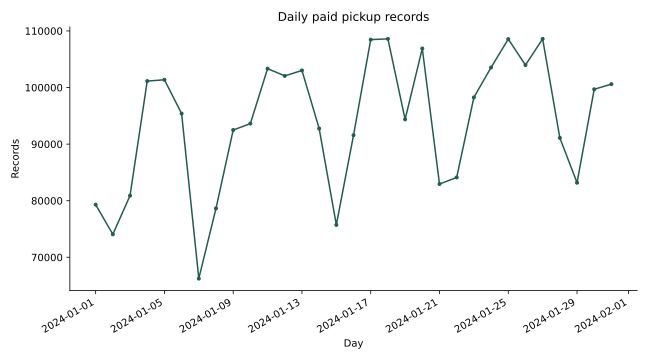
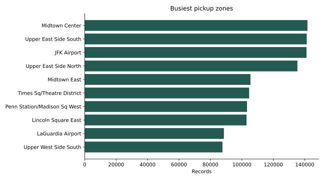
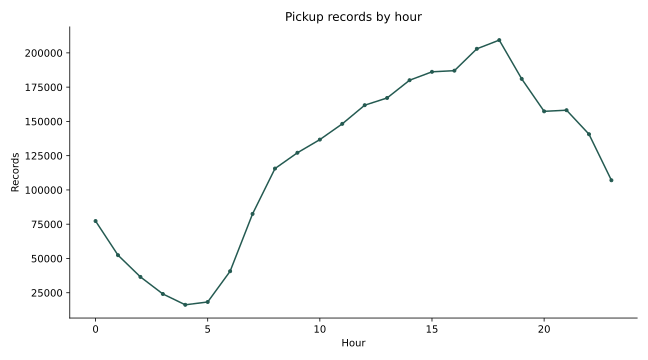

DANIEL UMEADI · PYTHON
NYC taxi operations
Results
2,914,490 paid January pickup records qualify for demand analysis; 2,848,985 pass the additional trip-quality filters. Midtown Center is the largest pickup zone with 141,721 records. A previous-week daily baseline for January 25–31 has 3.6% WAPE and 3,544 records/day MAE.
Recommended next step
Use zone and hourly profiles to guide staffing review. Treat the previous-week forecast as a benchmark and test additional months before operational use. Compare routes and payment types within the stricter operations scope.
Scope and limits
NYC TLC yellow taxi records, January 2024, local wall-clock timestamps. Counts measure recorded served demand, not unmet demand or unique customers. Demand requires a positive fare and a mapped pickup zone 1–263. Operational comparisons also require 1–180 minutes, 0–100 miles (exclusive of zero) and positive total amount. Repeated rows are retained because there is no trip ID. Total charges are not driver profit. Electronic tip recording differs from cash. One week of evaluation does not establish year-round accuracy.



Daily — results table
| day | records | rolling_seven_day_mean |
|---|---|---|
| 2024-01-01 | 79300 | NaN |
| 2024-01-02 | 74058 | NaN |
| 2024-01-03 | 80895 | NaN |
| 2024-01-04 | 101135 | NaN |
| 2024-01-05 | 101369 | NaN |
| 2024-01-06 | 95393 | NaN |
| 2024-01-07 | 66235 | 85,483.571 |
| 2024-01-08 | 78639 | 85,389.143 |
| 2024-01-09 | 92488 | 88,022.000 |
| 2024-01-10 | 93629 | 89,841.143 |
| 2024-01-11 | 103334 | 90,155.286 |
| 2024-01-12 | 102055 | 90,253.286 |
| 2024-01-13 | 103019 | 91,342.714 |
| 2024-01-14 | 92759 | 95,131.857 |
| 2024-01-15 | 75724 | 94,715.429 |
Hourly — results table
| hour | records |
|---|---|
| 0 | 77305 |
| 1 | 52392 |
| 2 | 36545 |
| 3 | 24092 |
| 4 | 16186 |
| 5 | 18256 |
| 6 | 40691 |
| 7 | 82509 |
| 8 | 115608 |
| 9 | 127135 |
| 10 | 136735 |
| 11 | 148232 |
| 12 | 161835 |
| 13 | 167125 |
| 14 | 180048 |
Zones — results table
| PULocationID | zone | records | workload_share | cumulative_share |
|---|---|---|---|---|
| 161 | Midtown Center | 141721 | 0.049 | 0.049 |
| 237 | Upper East Side South | 141249 | 0.048 | 0.097 |
| 132 | JFK Airport | 141111 | 0.048 | 0.146 |
| 236 | Upper East Side North | 135316 | 0.046 | 0.192 |
| 162 | Midtown East | 105451 | 0.036 | 0.228 |
| 230 | Times Sq/Theatre District | 104603 | 0.036 | 0.264 |
| 186 | Penn Station/Madison Sq West | 103259 | 0.035 | 0.299 |
| 142 | Lincoln Square East | 102960 | 0.035 | 0.335 |
| 138 | LaGuardia Airport | 88554 | 0.030 | 0.365 |
| 239 | Upper West Side South | 87636 | 0.030 | 0.395 |
| 163 | Midtown North | 84611 | 0.029 | 0.424 |
| 170 | Murray Hill | 82089 | 0.028 | 0.452 |
| 68 | East Chelsea | 76766 | 0.026 | 0.479 |
| 234 | Union Sq | 75433 | 0.026 | 0.505 |
| 48 | Clinton East | 75318 | 0.026 | 0.530 |
Routes — results table
| PULocationID | DOLocationID | records | median_minutes | mean_charge |
|---|---|---|---|---|
| 237 | 236 | 21615 | 6.800 | 15.736 |
| 236 | 237 | 19176 | 7.400 | 16.080 |
| 236 | 236 | 14938 | 4.133 | 13.079 |
| 237 | 237 | 13933 | 4.967 | 13.705 |
| 161 | 237 | 10134 | 8.367 | 17.062 |
| 142 | 239 | 8813 | 5.833 | 14.983 |
| 237 | 161 | 8712 | 8.217 | 16.480 |
| 161 | 236 | 8660 | 12.367 | 21.885 |
| 239 | 142 | 8526 | 5.850 | 14.553 |
| 239 | 238 | 8288 | 4.750 | 13.817 |
| 141 | 236 | 7685 | 7.350 | 15.923 |
| 237 | 162 | 7497 | 7.333 | 16.101 |
| 236 | 161 | 7044 | 12.983 | 21.417 |
| 142 | 238 | 6988 | 7.783 | 17.425 |
| 186 | 230 | 6945 | 11.417 | 18.827 |
Payments — results table
| payment_type | records | mean_charge | mean_recorded_tip |
|---|---|---|---|
| 0 | 114672 | 26.467 | 1.846 |
| 1 | 2285611 | 28.014 | 4.148 |
| 2 | 417573 | 23.801 | 0.000 |
| 3 | 9635 | 22.491 | 0.005 |
| 4 | 21494 | 25.251 | 0.004 |
Forecast — results table
| day | records | prediction | error |
|---|---|---|---|
| 2024-01-25 | 108553 | 108,597.000 | 44.000 |
| 2024-01-26 | 103966 | 94,370.000 | -9,596.000 |
| 2024-01-27 | 108595 | 106,899.000 | -1,696.000 |
| 2024-01-28 | 91099 | 82,945.000 | -8,154.000 |
| 2024-01-29 | 83180 | 84,114.000 | 934.000 |
| 2024-01-30 | 99693 | 98,257.000 | -1,436.000 |
| 2024-01-31 | 100600 | 103,548.000 | 2,948.000 |
Quality — results table
| source_rows | demand_records | operations_records | excluded_demand_records |
|---|---|---|---|
| 2964624 | 2914490 | 2848985 | 50134 |